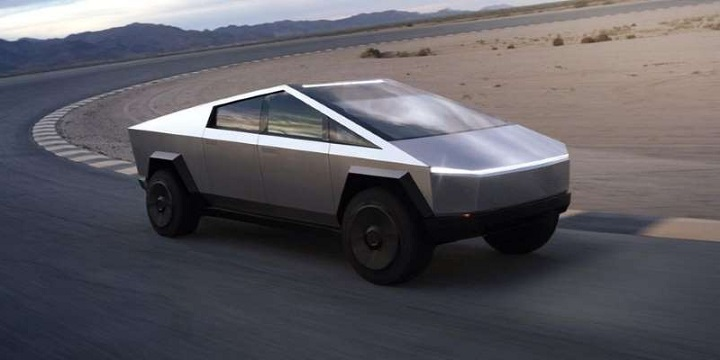
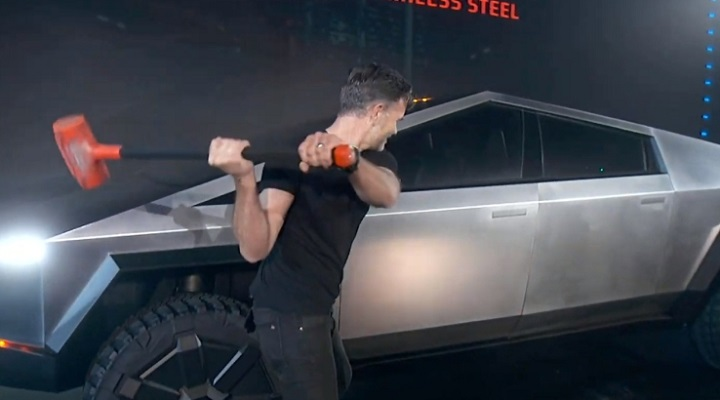
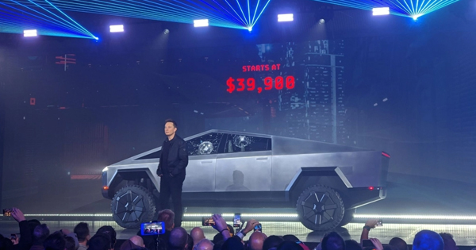

ილონ მასკმა ტესლას პირველი ელექტროპიკაპი წარადგინა
ილონ მასკმა დღეს ტესლას პირველი ელექტროპიკაპი წარადგინა. პიკაპი სახელად Cybertruck 2021 წლის მეორე ნახევრიდან გაიყიდება და მისი ფასი 39 900 დოლარიდან დაიწყება, თუმცა, მისი წინასწარი შეკვეთა უკვე შესაძლებელია.
პრეზენტაციიდან ცნობილი გახდა, რომ ტესლა Cybertruck-ის სამ მოდელს გამოუშვებს. პირველ მათგანს, ერთ დამუხტვაზე, 400 კილომეტრის დაფარვა და 6.5 წამში, 100 კმ/სთ-ში მიღწევა შეეძლება. მეორე მოდელი ერთ დამუხტვაზე 482 კილომეტრს დაფარავს, ხოლო 100 კმ/სთ-ში სიჩქარეს 4.5 წამში მიაღწევს. რაც შეეხება მესამე მოდელს, მას მსგავსი სიჩქარის აკრეფა 2.9 წამში შეეძლება და ექნება ამ ორი მოდელთან შედარებით, ორჯერ მძლავრი ელემენტი, რაც ერთ დამუხტვაზე, 800 კილომეტრის დაფარვის საშუალებას მისცემს. Cybertruck ექვსი ზრდასრული ადამიანისთვისაა გათვლილი.
პრეზენტაციაზე ძირითადი აქცენტი Cybertruck-ის გამძლეობაზე გაკეთდა. პიკაპის კორპუსი უჟანგავი ფოლადისგანაა დამზადებული და მდგრადია ექსტრემალური პირობების მიმართ. ისეთი ექსტრემალურისაც კი, როგორიც მანქანისთვის უროს ჩარტყმაა. რაც ცხადად ვნახეთ სცენაზე. თუმცა, გაუთვალისწინებელ შემთხვევის მომსწრენიც გავხდით – ფოლადის ბურთის სროლის შედეგად, პიკაპის ჯავშნიანი ფანჯარა გაიბზარა. აღსანიშნავია, რომ პიკაპი პრეზენტაციისას სიმძლავრით Ford F150-ს და სისწრაფით Porsche 911-ს შეადარეს.
